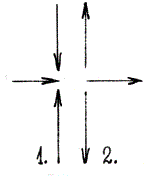
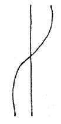
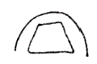
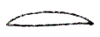

Беседа 3338 от 3877 · Беинса Дуно
Законъ за обнова / Закон за обнова
Отче нашъ.
Мога да кажа.
Махаръ Бену Аба.
Ще говоря върху закона за обновата.
Човѣкъ може да знае много работи, но ако законътъ за обновата не работи – той не се ползува. Единъ, който не е запознатъ съ закона за обновата, той не разбира какъвъ е смисълътъ. Имате единъ знакъ – обърнатъ. Въ единия случай сѫ съединени заедно – С, С е обърнатъ надолу. По нѣкой пѫть усѣщате особено неразположение, не си разположенъ. Да си боленъ – не си боленъ, да си гладенъ – не си гладенъ, но имашъ едно неразположение. Не искашъ да срѣщашъ никого, не искашъ да говоришъ съ никого.


Сега да дойдемъ до закона за обновата. За да се обнови човѣкъ, трѣбва да бѫде въ хармония съ онзи човѣкъ, когото изучава. Ти не може да се обновишъ, ако не разбирашъ природата, да видишъ какви сѫ твоитѣ възгледи. Ако изучавашъ и по-низшитѣ сѫщества, като срѣщнешъ нѣкое животно – погледне те, съобразява се има ли нѣкаква обновителна сила или не. Като те погледне, веднага ще вземе нѣкаква стратегия. Защото всичкитѣ хора не оказватъ едно и сѫщо влияние. Срѣщате единъ човѣкъ – цѣлия день сте неразположени. Срѣщате другъ човѣкъ – цѣлия день сте разположени. Срѣщате единъ набоженъ човѣкъ и цѣлия день вие имате туй Божествено настроение. Другия день срѣщате свѣтски човѣкъ, който мисли само за този свѣтъ, не мисли за оня свѣтъ. То сѫ специфични разбирания. Нѣкои мислятъ, че само този свѣтъ е хубавъ. Ние нѣмаме противоречие, че е влѣзълъ въ този свѣтъ. Нѣкои мислятъ, че само въ другия свѣтъ е хубаво. Ако си въ този свѣтъ и очитѣ ти не функциониратъ хубаво, ушитѣ не функциониратъ хубаво, носътъ не функционира хубаво, устата, краката не функциониратъ – тогава какво те ползува този свѣтъ? Но и въ другия, и въ духовния свѣтъ, трѣбва да имашъ известни чувства да функциониратъ. Представете си, че този свѣтъ представ(лява) една долина съ градини, съ плодове, съ плодови дървета, има езера, блатисти мѣста. Духовниятъ свѣтъ представ(лява) високъ планински връхъ, той е красивъ. Ако се качите горе, на планината, имате чистъ въздухъ, но мисъльта ви не функционира добре. Тамъ има ли нѣщо за прехрана? Чистъ въздухъ има по високитѣ мѣста, но само туй не ползува човѣка. Ти седишъ горе, на високото мѣсто, и ще трѣбва да слѣзешъ въ долината, дето има плодове – ябълки, круши, всички удобства. На високитѣ мѣста нѣма тия нѣща. Туй положение, тая обстановка е временна. Представете си, че на високитѣ мѣста, по планинитѣ, може да растатъ ябълки, круши и други плодове. Тогава планината ще бѫде още по-хубава. Защо именно горе, по планината, не растатъ плодни дървета? – Разпредѣленъ е трудътъ. Защо дробоветѣ не се хранятъ тъй, както стомахътъ се храни? – Ако дробоветѣ се хранѣха така, както стомахътъ се храни, човѣкъ какъвъ ще бѫде? – То ще бѫде страшно. Въ дробоветѣ вече имате единъ по-възвишенъ свѣтъ. Въ стомаха – ти си робъ на условията. Много ще работишъ, малко блага ще имашъ, малко благоутробие ще имашъ. Ще изучавашъ, колко отъ тази храна може да те ползува. – Много малко. Ние работимъ чрезмѣрно много, много малко благоутробие имаме. Сега работа имаме въ много направления. Ядешъ нѣкой пѫть, но храната не ти допринася онова, което ти искашъ отъ нея. Нѣкой пѫть ядешъ храна и си благодаренъ. Щомъ си благодаренъ – има една обнова. Тази храна принася ти нѣщо. Има единъ човѣкъ, когото обичашъ, приятно ти е да го срѣщнешъ, искашъ да го срѣщнешъ. Щомъ не го обичашъ – не искашъ да го срѣщнешъ. То е първиятъ случай /1 на чертежа/. Тѣзи стрели показватъ мѫжкия принципъ. Тѣ сѫ положителни, отблъскватъ се. Тукъ сѫ трима, и тримата сѫ на три мнения, отблъскватъ се, съ нищо не може да ги примиришъ. Единъ човѣкъ, който е гладенъ, ти му разправяшъ за оня свѣтъ. (Той) казва: „Не ми разправяй за оня свѣтъ“. Пита: „На оня свѣтъ има ли храна, има ли ядене?“ Ако му кажешъ: „Нѣма“, ще каже: „Мене не ми трѣбва такъвъ свѣтъ, въ който нѣма ядене“. Нѣкои мислятъ, че въ оня свѣтъ нѣма ядене. И тамъ има ядене. Въ оня свѣтъ, като вземешъ храната – нѣма да я дъвчешъ, както въ този свѣтъ. Тази храна сама се разтопява въ цѣлия организъмъ. Тукъ ти трѣбва да знаешъ да дъвчешъ. Следъ като ядешъ, казвашъ: „Не е хубава храната“. Нѣколко часа е употрѣбено да се приготви яденето и казвате, че не е добре сготвено. Преди два деня бѣха ни сготвили сарми, голѣми сарми. Зелето изисква зѫби. Гледамъ – нѣкои дъвчатъ листата, нѣкои оставятъ листата, изѣдатъ само ориза. До мене седи единъ приятель, на когото казвамъ: „Ние сме честни хора, оставяме листата, показваме, че сме яли сарми. Оставяме обвивката, изѣдаме само ориза. Казваме, че сме яли сърми“. Въ насъ има доста зелеви листа, които сѫ останали, понеже искатъ дъвкане. Ние се намираме въ противоречие. Нѣкой пѫть ние слизаме въ стомаха и не може да намѣримъ вратата да излѣземъ навънъ. Нѣкой пѫть господарьтъ влѣзе въ стомаха, защото потрѣбно е да влѣзе въ стомаха. Но по нѣкой пѫть се намѣри въ противоречие. Като единъ виденъ богатъ английски банкеръ, който веднажъ отишълъ да прегледа своето подземие съ каситѣ си и оставилъ ключа отвънъ, не извадилъ ключа да го тури въ джоба си, но оставилъ ключа отвънъ на вратата. Тя се затворила и той останалъ затворенъ въ подземието. Седи той тамъ, търсятъ го насамъ-натамъ, и гладенъ умира вѫтре. И пише тъй: „Ако имаше нѣкой да ми даде малко хлѣбецъ, щѣхъ да му дамъ половината си имане“. И като умира, пакъ не дава цѣлото си имане. Като умира, дошълъ до положението да даде половината отъ имането си. Та казвамъ: Когато слизашъ въ стомаха, ще извадишъ ключа, ще го туришъ въ джоба си, защото опасна работа е. Като слизашъ въ дробоветѣ, пакъ сѫщият законъ е – ключа ще го носишъ въ джоба си. И въ главата си като влизашъ, ключа ще го носишъ въ джоба си. Три нѣща има, които човѣкъ посещава: главата, дробоветѣ и стомаха. Той трѣбва да носи ключоветѣ. По нѣкой пѫть ние загазимъ въ мозъка си. Голѣмъ да е, но загазимъ. Знаешъ (ли), какво става на човѣка, ако загази въ малкия мозъкъ? – Цѣлия день ще крѣка, ще вика, ще вдига шумъ, неразположенъ е. Нѣкои мислятъ, като влѣзатъ въ малкия мозъкъ, че никой не ги обича. Но то е въ отрицателната, въ пасивната страна /2 на чертежа/. Въ едно отношение ти си недоволенъ. (Нѣкой) казва: „Нѣма хора, никой не може да те обича“. Другъ казва: „Нѣма хора, нѣма кого да обичашъ“. Единиятъ се оплаква, че нѣма кой да го обича, другиятъ се оплаква, че нѣма кого да обича. Каква е разликата? – „Нѣма кой да те обича“ – ти си гладенъ, нѣма кой да ти даде хлѣбъ. А пъкъ „нѣма кого да обичашъ“ – ти носишъ хлѣба, но не искашъ да го дадешъ на когото и да е, но търсишъ нѣкого – искашъ да продадешъ хлѣба. Въ първия случай искашъ да купишъ хлѣбъ, въ другия случай искашъ да го продадешъ, търсишъ нѣкой да ти даде повече за хлѣба. Казвашъ: „Нѣма хора, които да те обичатъ“ – значи: нѣма кой да ти продаде хлѣбъ. „Нѣма кого да обичашъ“ – нѣма кому да продадешъ хлѣба.
Та казвамъ: Нашата глава служи за обнова. Ако човѣкъ знае (кѫде) има мѣста въ мозъка – той ще се обнови. Има мѣста въ мозъка, ако се постави тамъ – цѣлия день ще бѫде неразположенъ. Има една область, отстрани горе на главата, ако се залостишъ тамъ – цѣлия день ще имате страшни работи. Ще мислишъ за сиромашията, ако осиромашѣешъ – какво ще правишъ, ако ви нападнатъ разбойници, ако стане земетресение, ако стане нѣкоя война, ако дойде нѣкоя буря, ако дойде наводнение. Се такива страшни работи ще ти идватъ на ума. Цѣлата вечерь ще бѫдешъ такъвъ обърканъ: ако ямъ – ще се задавя, ако храната ми не (се) смеле, ако сърдцето ми спре, ако гръбнака ми се счупи, ако краката ми се изкълчатъ. Като мислишъ така, какъ ще се обновишъ, кажете ми? – Не може да се обновите, докато имате противоречия. Законътъ за обновата изисква да се премахнатъ противоречията. Най-първо ти мислишъ, че нѣма такива хора за обичь.
Азъ съмъ превеждалъ онзи анекдотъ. Турция забогатѣла нѣкога. Когато хората забогатѣятъ – леностьта се образува. Въ една область имало много мързеливи хора – дембелханета. Набирали се 20 хиляди дембелханета – всички лежатъ, нищо не работятъ, очакватъ да имъ донесатъ яденето, пиенето. Султанътъ се обезпокоилъ, какво да правятъ съ тия дембелханета – само ядатъ, държавата ще пропадне така. Везирътъ билъ уменъ човѣкъ и той, (за) да ги изпита кои сѫ хасълъ дембелханета, решилъ да запалятъ дембелхането, кѫдето лежѣли и които останатъ, (до)като гори дембелхането, ще ги счита за дембелханета. Като се запалило дембелхането, всички избѣгали, останали само двама – седятъ, пекатъ се. Единиятъ казва на другия: „Ще изгоримъ“. Другиятъ му отговорилъ: „Какъ не те мързи да говоришъ?“ Слушалъ ги везирътъ и отъ 20 хиляди останали само двама хасълъ дембелханета. Дембелхане, значи човѣкъ, който търси своето удоволствие. Въ турско време имаше единъ навикъ, който го обичамъ. Като стане сутринь турчинътъ, той имаше едно наргиле. Ще запали лулата, ще пие кафето, ще запуши и наргилето ще заклокочи. Доста хигиенично е. Понеже димътъ минава презъ наргилето и се пречиства. Като пуши, въздуха минава презъ единъ маркучъ и се пречиства. Тукъ бѣше дошълъ единъ лѣкарь (и) имаше едно наргиле.

Казвамъ: Трѣбва да знаятъ, кѫде сѫ обновителнитѣ процеси. Трѣбва да срещнешъ единъ човѣкъ, който е обновенъ, който се обновява. Срещнешъ нѣкой – не вървятъ работитѣ добре. Българинътъ има една черта – когато го питашъ какъ е гроздето или какъ е житото, никога нѣма да ти каже, че е хубаво. Казва: „Родило е малко“. Турчинътъ има една черта. Той преувеличава и показва повече, отколкото е. Българинътъ намалява. Страхъ го (е), ако каже, че е хубаво, да не би да му го взематъ. Казва, че не е хубаво, за да има и идната година малко повече. Но то зависи де е човѣкъ. Редъ поколѣния има, които сѫ живѣли тамъ, дето не трѣбва. Ако започнемъ съ религиозния животъ, искаме да преустроимъ мозъка на човѣка, да се разшири главата. Ако неговото чело не може да се подигне, ако коронната часть не може да се подигне и остане права линия – трѣбва да се образува поне една малка крива линия горе. Тази крива линия показва, че при каквито и условия да си, и при най-лошитѣ, казвашъ: „Добъръ е Господь, ще се оправи тази работа“.

Та казвамъ: Ако знаемъ да наредимъ нашитѣ мисли – имашъ вадичка. Ако знаешъ да наредишъ камъчетата, ако знаешъ да наредишъ своитѣ чувства и своитѣ постѫпки – ще имашъ нѣщо музикално. Цѣлиятъ свѣтъ е едно благо. Ние живѣемъ въ единъ свѣтъ на голѣми възможности. Не си самъ музикантъ. Ти ще идешъ при единъ музикантъ, (той) ще ти помогне, ще те изслуша. Нѣкой е художникъ. Ще идешъ при нѣкой, който е художникъ. На всѣки художникъ трепти сърдцето му, за да даде нѣщо отъ себе си. Всѣки човѣкъ иска да даде нѣщо отъ себе си. Много хора страдатъ, че нѣма кѫде да дадатъ стоката си. Много страдатъ, че нѣма кѫде да направятъ едно добро. Единъ лошъ човѣкъ седи, иска да купи. Добриятъ пъкъ иска да продаде. Този, който не може да купи стоката, сърди се, че не може да купи. Другъ има, който не може да продаде стоката си, и той се сърди. И двамата се сърдятъ. Ако онзи купува добре, а другиятъ продава добре – и двамата сѫ доволни. Най-първо природата иска отъ насъ нѣщо ние да ѝ дадемъ. Тя всѣки день иска да ѝ дадемъ нѣщо. Станешъ сутринь, не искашъ да благодаришъ на Бога. Благодари на Господа, че слънцето ти дава. Приемашъ свѣтлината, приемашъ въздуха, приемашъ водата – за всичко туй благодари, което си възприелъ. Ти трѣбва да дадешъ нѣщо отъ себе си. Ти седишъ, мърморишъ и казвашъ: „Туй не е наредено, онова не е наредено“. – Тепърва има да се нарежда. Ако постѫпишъ ученикъ въ една гимназия, изведнажъ въ 8-ми класъ ли ще постѫпишъ? – Най-първо ще постѫпишъ въ 1-ви класъ, втората година – въ 2-ри, въ 3-ти, и постепенно ще идешъ въ 8-ми класъ презъ осмата година. Ако си училъ добре – всичкитѣ професори, всичкитѣ учители въ гимназията ще иматъ добро мнение за тебе. Ако не учишъ, казватъ: „Не учи добре“. Казвамъ: Всички ние сме ученици въ това Божествено училище. Сега ние мислимъ, че като постѫпимъ въ 1-ви класъ – то е свършено. Хиляди години като учите, пакъ ще знаете толкозъ, колкото сега знаете. Всички тия теории, които сега ги знаете, тѣ сѫ привидни. Следъ хиляди години свѣтътъ ще се измѣни. Следъ хиляди години свѣтътъ не може да го обяснимъ по този начинъ, по който сега го обясняваме. Ти си билъ едно малко детенце, игралъ си съ малки прѫчици, станалъ си на 21 година – ще вземешъ ли прѫчката да я туришъ между краката и да си играешъ на конче? Сега вие се връщате къмъ вашето минало и казвате: „Колко хубаво бѣше, когато майка ми ме носеше на рѫце“. Ако цѣлия животъ майка ти те носи на рѫце, какво ще стане отъ тебе?
Най-първо сега трѣбва да се премахне недоволството. Вие опитвали ли сте да премахнете вашето недоволство? Да допуснемъ, че вие сте въ единъ голѣмъ салонъ, има много публика. Ако всички прозорци сѫ затворени, следъ половинъ часъ усѣщате, че атмосферата е натежала. Трѣбва да се отвори отнѣкѫде, да влѣзе една обновителна струя. Човѣкъ има въ себе си около десетина органи за обнова. Презъ всѣки органъ трѣбва да влѣзе една обновителна струя. Ти, ако чрезъ органа на твоето милосърдие не може да влѣзе милосърдието – тази енергия, ти нѣма да имашъ хубавото разположение. Ако чрезъ органа на твоята вѣра не може да влѣзе силата на вѣрата – (нѣма) да ти даде онзи широкъ просторъ за свѣта. Ако чрезъ органа на надеждата тази сила не може да влѣзе – не може да усѣтишъ това подмладяване. Надеждата всѣкога подмладява човѣка. Вѣрата дава просторъ. Надеждата обхваща нѣщо по-материално. Като дойдете до любовьта, вие имате най-високата проява на Божествения животъ.
По нѣкой пѫть вие мислите кого да обичате. Вие може да обичате, ако разбирате природата. Много разумни сѫщества има, които сѫ влѣзли въ цвѣтята и скрили сѫ се, напримѣръ въ единъ карамфилъ, и очакватъ само да ги погледнете, да ги помиришете, че имъ става много приятно. Понеже това ухание, което издава карамфилътъ, като дойде въ носа ви това ухание, може да кажешъ: „Колко хубаво мирише“. Само като помислишъ за него, радва се сърдцето на това карамфилче. Казвате: „Ще ида азъ да се занимавамъ съ единъ карамфилъ“. Мислите ли, че нашиятъ животъ, като се занимаваме само съ хората, че е много сериозна работа? Представете си единъ младъ момъкъ или една млада мома. Но следъ години, като остарѣе, стане сухи кости. Не е ли човѣкъ като едно цвѣте, и той съхне. Чудишъ се какъ си я прегръщалъ, прегръщашъ я, но нѣма нищо. Като прегърнешъ нѣкой човѣкъ, мяза на сухо дърво. Като прегърнешъ другъ, излиза нѣщо отъ него. Като прегърнешъ другъ, нищо не дава, мяза на крава, която доишъ, но нищо не дава.
Казвамъ: Сѫществениятъ животъ е животътъ на обновата. Туй, което влиза въ човѣка и което излиза, то е реалното. Туй, което вече не излиза и не влиза – ние се намираме въ единъ статически свѣтъ. Казвате: „Онзи не струва да обичашъ, този не струва да обичашъ“. То сѫ изопачени работи. Трѣбва да се освободите отъ голѣмитѣ заблуждения, въ които сега се намирате. Виждашъ една монета, която е окалѣна. Казвашъ: „Тя е окалѣна“. Като измиешъ тази монета, ще видишъ, че тя е чиста. Видишъ скѫпоцененъ камъкъ, окалѣнъ е. Ако вземешъ този камъкъ, умиешъ го (и) стане чистъ. Казвамъ: Сега всички живѣете въ единъ свѣтъ на Божествени възможности и Господь ви изпитва. Срещнете единъ човѣкъ, казвате: „Той е грѣшникъ“. Този грѣшникъ е скѫпоцененъ камъкъ – отвънъ е грѣшникъ, отвѫтре е праведникъ, съдържание има. Очисти му кальта. Внеси въ него една мисъль положителна. Този човѣкъ се е обезсърдчилъ, боленъ (е). Помисли, че ще оздравѣе следъ три деня. Казвашъ: „Като кажа, ще стане ли?“ – Ще стане. Ако кажешъ, че следъ петь деня ще оздравѣешъ, ти не се съмнявай – ще оздравѣешъ. Онова, което мислишъ, щомъ не се съмнявашъ въ себе си – то ще стане. Защото Богъ е онова сѫщество, което ни дава онова, което мислимъ, което чувствуваме. Дотолкозъ, доколкото вѣрваме въ Него – дотолкозъ ни дава. Защото вѣрата въ насъ е възможность. Ти отивашъ при Господа съ една малка цепнатина, една малка дупчица – какво ще ти даде? – Колкото твоята цевь е по-голѣма, толкозъ повече ще ти даде Господь. Ако имашъ силна вѣра – по-голѣма възможность имашъ, благословението ще дойде по-скоро. Ако вѣрата ти е слаба – ще дойде благословението по-кѫсно.
Ето азъ какво разбирамъ подъ думата „любовь“. Като обичашъ нѣкого, ще видишъ, че и Господь се радва на това. Богъ е доволенъ, че обичашъ. Като обичашъ (нѣкого) – радвай се заради Господа въ себе си, че го обичашъ. Щомъ обичашъ единъ човѣкъ заради Него, тя е временна (обичь). Щомъ го обичашъ, азъ се радвамъ въ себе си, Богъ е доволенъ отъ любовьта. Богъ е доволенъ, че азъ проявявамъ Неговата любовь, както Той иска. Този, когото обичамъ, е доволенъ, че Господь му (е) изпратилъ единъ човѣкъ, който го обича. Знаете (ли), колко хубаво е да има единъ човѣкъ, който ви обича? Обича ви онзи, който никога нѣма да ви направи една забележка. Идеалната любовь седи въ това. Да кажемъ – азъ съмъ единъ учитель, имамъ единъ способенъ ученикъ, (който) свири. Като го слушамъ, никога не му казвамъ, че не може да свири. Казвамъ му: „Добре свиришъ“. Понеже го обичамъ, той, като направи погрѣшка, той вече знае и той самъ се коригира. Ако река азъ да го коригирамъ, то е несъвмѣстимо. Когато обичашъ единъ човѣкъ, никога не го коригирай. Който те обича, ако те коригира… Ще изучавате любовьта си, само нѣма да се коригирате. Казва: „Ти не трѣбва да пѣешъ“. – „Че какъ трѣбва да пѣя?“ Може да каже нѣкой: „Този предметъ не трѣбва да се развие“. – „Че какъ трѣбва да се развие?“ Имамъ единъ сопранъ, нека пѣе като сопранъ. Имамъ единъ алтъ, нека пѣе като алтъ. Имамъ единъ теноръ, нека пѣе като теноръ. Имамъ единъ басъ, нека пѣе като басъ. Басътъ е хубавъ, магнетиченъ е басътъ. После, тенорътъ има голѣмъ замахъ, сила има въ него. Сопранътъ има голѣми амплитуди, той е високъ. Алтътъ е толкова скроменъ – като пѣе, не иска да се покаже. Сопранътъ, като пѣе, иска всички да го разбератъ. Басътъ иска всички да знаятъ, че е силенъ. Като пѣе нѣкой басъ, да започне свѣтлината да се раздвижва.
Да допуснемъ сега, че имате едно неразположение. Какъ ще се премахне неразположението? – Ако сте единъ художникъ и започнете да рисувате – ще го премахнете. Ако сте нѣкой скулпторъ и започнете да чукате, започнете да работите, тия скулптори доста музикални хора сѫ, музикално удрятъ, музика има въ него. Не си скулпторъ, не си художникъ, (но) знаешъ да пѣешъ – пѣй тогава. Вие още не сте се научили да пѣете. Вие пѣете, като издишате. Сега трѣбва да се научите да пѣете и като вдишвате. Пѣли ли сте вие, като вдишвате въздуха? Най-добритѣ пѣвци въ свѣта сѫ ония, които пѣятъ като вдишватъ. Който пѣе, като издишва – той е наполовина пѣвецъ. Който пѣе и като вдишва, и като издишва – той е истински пѣвецъ. /Учительтъ свири при вдишване/. Онзи, който знае да пѣе, когато вдишва и издишва, тогава ще чувамъ онова, хубавото пѣене. Като пѣе „Въ началото бе Словото“ – тоноветѣ ще ги чувашъ. Казвамъ: Мѫчно е пѣенето, като вдишва човѣкъ. Пѣенето, като вдишвашъ, е за тебе. Като издишвашъ, е за другитѣ. Ако за себе си знаешъ да пѣешъ, и за другитѣ ще знаешъ. И въ мисъльта е сѫщия законъ.
Законътъ за обновата започва отъ онова, което приемашъ. Най-първо ще се научишъ да оценявашъ любовьта, която Богъ ти дава. Ако туй, което си придобилъ отъ Бога, ти го оценявашъ и туй, което дадешъ вънъ отъ себе си, ще се оцени. Сега вие искате да се подмладявате. Възможно е, но мислете по половинъ часъ за подмладяването. Чувамъ сестри да казватъ: „Остарѣхме, побѣлѣхме“. Пакъ се срѣщатъ и пакъ казватъ: „Остарѣхме, побѣлѣхме“. – Че какво сте побѣлѣли? Зимно време, като навали снѣгъ по растенията – остарѣли ли сѫ растенията? Всички сѫ побѣлѣли, но то е временно. Зимно време е, малко снѣгъ е дошълъ по главитѣ ви, (а) казвате, че сте остарѣли. Като дойде пролѣтьта, ще се стопи снѣга, пакъ ще почернѣятъ главитѣ ви. Вие се заблуждавате, че сте побѣлѣли. Ако старостьта седи въ бѣлитѣ коси – лесна работа е. Има млади хора, които иматъ бѣли коси. Има деца по на 5–10 години съ бѣли коси.
Събуждайте въ себе си хубавитѣ чувства. Сега на васъ ви трѣбва едно огледало. Денемъ, най-малко три пѫти на день, пъкъ и десеть пѫти като правите – добро ще бѫде. Каквото настроение и да имате, огледайте се да видите. Когато се разсърдите – нѣма да ви правятъ забележка, само да имашъ едно огледало и да се огледашъ. Ти самъ започвашъ да се смѣешъ. Вие сега, като се разсърдите, смѣшни ставате – деформира се лицето, навѫсите се. Азъ, като се разсърдя, ето какво правя: лицето – засмѣно, рѫката – на главата. Туй е сръднята въ мене. Защото, като пѣя нѣкои нѣща, съзнавамъ, че другояче трѣбва да се пѣятъ, не може да ги изпѣя. Нѣкой пѫть свиря нѣкои работи, азъ самъ съмъ недоволенъ. Нѣкой пѫть правя опити. Иде нѣкой при мене боленъ, седи отвънъ, пъкъ азъ свиря. Като свиря, този човѣкъ се нервира. Като започна да свиря на болния, като даде внимание – забравя болестьта и оздравява. Другиятъ, който се безпокои, тревожи се – че тревожи и мене, азъ не мога да свиря. По нѣкой пѫть азъ го държа половинъ часъ вънъ, той ходи, тревожи се, азъ свиря. Понеже виждамъ, че (съ) свирене нѣма да стане – туря цигулката, слизамъ долу. Казвамъ: „Какво обичате?“ Нѣкой пѫть зная кѫде е болката. Той се уплашилъ, че ще умре. Азъ взема, че го бутна съ лѣвата рѫка по лѣвата страна на главата. (Той) казва: „Чудна работа. Бѣхъ боленъ, бутна ме съ лѣвата рѫка по главата и оздравѣхъ. Магия ми направи. Омагьоса ме“. Пъкъ омагьосването е проста работа. Азъ като турихъ рѫката на главата му, неговата енергия започна да тече. Той прилича на жена, която родила малко дете, набрало се млѣко въ нѣнкитѣ на майката и ѝ причинява болка. Ако детето не смуче това млѣко, набира се млѣко и майката страда. Нѣкѫде се набира енергия, въ мозъка нѣкѫде. Трѣбва да дойде единъ човѣкъ, да изтегли тази енергия. Въ природата Богъ, като ни обича, праща ни по нѣкой пѫть страдания, за да отнема онова излишното, което имаме въ насъ. Страданията сѫ излишна енергия въ насъ. Като страдаме, тази енергия отива навънъ. Като се разсърдишъ, то е пакъ изчистване. Сръднята не е лошо нѣщо. Нѣкой пѫть искашъ да се разсърдишъ. Тогава харчишъ повече енергия. Ако давашъ излишното, сръднята е на мѣсто. Нѣкой пѫть хубаво е да се разсърдите. Взема се тази енергия. Нѣкой пѫть ти дойдешъ въ съприкосновение съ хората, които сѫ по-магнетични. Другъ пѫть срѣщашъ човѣкъ, който е нервенъ. Нервнитѣ хора даватъ импулсъ. Тѣ не даватъ магнетизъмъ, но импулсъ. Като срещнешъ човѣкъ разположенъ, предава ти магьосническа сила. Нѣкой пѫть, когато хората сѫ нервни, трѣбва да срѣщашъ разположени хора. Въ разположения човѣкъ силно е развита вѣрата, надеждата, любовьта, въображението, всичкитѣ разположения. Богатъ е този човѣкъ. Като срещнешъ този човѣкъ, въ духовния свѣтъ дава. Дойде нѣкой човѣкъ при тебе, приеми го добре. Сега говоримъ за себе си, да знаете какво да си говорите.
Споредъ закона за обновата, човѣкъ всѣки день трѣбва да се качи на три мѣста. На първо време стани на физическото поле въ тѣлото. Следъ туй трѣбва да се качишъ въ своята дихателна система – то е духовния свѣтъ. Най-после да се качишъ горе въ мозъка – въ Божествения свѣтъ. Да направишъ една връзка между физическия свѣтъ, и духовния свѣтъ, и Божествения свѣтъ. Всѣки день разнообразие трѣбва да има. Не избѣгвайте хората. Казвате: „Тѣ сѫ свѣтски хора“. Не гледайте така. Не искамъ да ви говоря, защото, ако ви дамъ нѣкаква външна форма, ще се заблудите. Ако ви кажа по какво се отличава единъ лошъ отъ единъ добъръ човѣкъ, нѣма да се ползувате. Ако ви кажа по какво се отличава единъ даровитъ отъ единъ недаровитъ човѣкъ, нѣма да се ползувате. Споредъ мене, единъ лошъ човѣкъ е недаровитъ. Думата „лошъ“ не е лоша, но ш-то е лошо. Като извадишъ ш-то отъ думата „лошъ“, тя става на добра. Ш-то да го обърнешъ надолу, както обръщатъ удавницитѣ, на които дробоветѣ се напълнили съ вода – обръщатъ ги надолу съ главата, за да излѣзе водата. Човѣкъ отъ себе си трѣбва да извади непотрѣбнитѣ работи. Станешъ сутриньта, казвашъ: „Остарѣхме“. Другояче говорете, кажете: „Наближи времето да си ходимъ (у) дома. Пишатъ ни нашитѣ, искатъ да си идемъ“. Да ти е приятно, че ще се върнешъ. Казватъ: „Остарѣхъ“. Дойдешъ на голѣми изпитания, ще кажешъ: „Учатъ ме“. Изпитанието не е лошо нѣщо. Давашъ изпитъ на онова, което си училъ. Нѣкой пѫть може да те изпитатъ доколко обичашъ, може да те изпитатъ доколко вѣрвашъ, може да те изпитатъ доколко се надявашъ, може да те изпитатъ доколко знаешъ – колко знаешъ да пѣешъ, колко знаешъ да рисувашъ, нѣкой пѫть може да те изпитатъ да знаешъ каква е тежестьта. Въ всичкитѣ процеси трѣбва да знаешъ – тѣ сѫ важни. Срѣщашъ едно дете, казвашъ: „То е дете“. Ти се радвай, че е дете, погали го малко, неговото съзнание не е пробудено. Срещна нѣкой старъ дѣдо, погледне ме и казва: „Знаешъ (ли), на 85 години съмъ“. Старитѣ баби и старитѣ дѣдовци много ги разбирамъ. Като го погледна, виждамъ, че има достойнство. Погледне ме, измѣри ме, мисли си: „Не можешъ да ме излѫжешъ, че носишъ нѣщо ново“. Гледа ме дѣдото критически, поусмихне се. Казвамъ: „Дѣдо, много ми харесвашъ“. Тѣ обичатъ много да ги хвалятъ. „Има нѣщо много хубаво въ тебе“ – му казвамъ. „Имашъ единъ отличенъ умъ и сърдце, но живѣешъ между хора, които не те оценяватъ. Едно време, когато си билъ младъ, личенъ си билъ между всичкитѣ момци, много способенъ човѣкъ“. Той казва: „Кой ти е казалъ нѣщо?“ – „Никой не ми е казалъ, но наука е това“. – „Че какъ? Може ли? Да не ти е казалъ нѣкой отъ селото нѣщо?“ – „Не, но наука е това. Господь е написалъ на човѣка известни черти. Мене ми е много приятно, че се срещнахъ съ тебе. Колко нѣща научихъ отъ тебе“. – „Я ми кажи нѣщо“, и си подава рѫката, заинтересува се вече дѣдото. Тогава му казвамъ: „Ако се подмладишъ, тогава какво ще правишъ?“ – „Ако се подмладя, не искамъ да правя една глупость, която направихъ едно време – оженихъ се, баща станахъ. Сега нѣма да се женя. Като стана на 33, на 45 години, че тогава искамъ да науча нѣщо хубаво“. Казвамъ: „Много хубаво. Едно време, въ Библията пише за единъ човѣкъ, който се оженилъ на 65 години, хемъ имаше две жени“. – „Че какъ две жени?“ – „Едната обичаше, другата не я обичаше“.
За какво може да се говори сега на свѣта? Какво значи свѣтъ? – Единъ свѣтъ красивъ навсѣкѫде – каквото погледнешъ, всичко се радва. Свѣтскиятъ животъ е всички цвѣтя, вода, листа – всичко туй се радва. То е свѣтскиятъ животъ. Свѣтътъ на любовьта е дето всичко се радва. Свѣтътъ на вѣрата е дето всичко има довѣрие. Свѣтътъ на надеждата – то е реализиране. Да влѣзешъ въ свѣта на надеждата, значи въ физическия свѣтъ да влѣзешъ. Свѣтътъ на вѣрата е красивиятъ духовенъ животъ. Любовьта е свѣтътъ на любовьта, то е Божествениятъ животъ. Нѣма да казвашъ: „Тукъ криво си направилъ“. Въ любовьта не може да има криви работи. Всичкитѣ работи, които любовьта прави, сѫ ценни. Тя носи живота. Онзи, който ви обича, само чрезъ своя погледъ, само чрезъ своето пипане – той ви дава нѣщо. Като ви обичатъ хората, внасятъ живота. Като не ви обичатъ, тѣ ви отнематъ живота.
Сега говоримъ за закона на обновата. Два живота има въ свѣта: животъ, който е образувалъ рая на безлюбието, който е образувалъ ада и животъ на любовьта, който е образувалъ рая. Въ новия животъ е любовьта. Ти живѣешъ по закона на безлюбието и искашъ да имашъ рая. Ти ще имашъ ада. Всичкитѣ страдания въ насъ произтичатъ отъ закона на безлюбието. Всичкитѣ радости произтичатъ отъ закона на любовьта.
Казвамъ: Всѣки день отваряйте душитѣ си. Сега не че вие не я отваряте.
Сега ще пристѫпимъ малко къмъ музика. Да кажемъ имате обикновено пѣене, пѣете една пѣсень. Имаме коя да е пѣсень, тѣ сѫ обикновени работи. Азъ ще ви дамъ сега едно упражнение. Азъ ще пѣя на себе си, вие ще ме слушате, на себе си ще пѣя. /Учительтъ свири и пѣе „хаинзо“ въ много мелодии/. То вече е свободното пѣене. То е единъ музикаленъ езикъ. „Хаинзо“, когато искашъ да примиришъ хората. „Хаинзо“, когато слизашъ да помагашъ.
Соль – туй, което цъвти. Ре – туй, което се движи. Ла – туй, което знае. И ми – туй, което се обхожда. Туй, което цъвти въ тебе, трѣбва да завърже. Туй, което завързва, трѣбва да узрѣе. Туй, което узрѣва, трѣбва да се възприеме. Всѣка една мисъль, всѣко едно чувство, всѣка една постѫпка трѣбва да се възприеме отъ човѣшката душа, отъ човѣшкия духъ да се опита. Само въ опита е Божественото разбиране. Ние опитваме нѣщата. Ние само помирисваме цвѣтята. Какъвъ е вкусътъ на плода, не знаемъ. Уханието, красотата, която има цвѣта, опитваме. Но после има процесъ на зрѣене. Това, което опитваме после, то е разбирането, то остава въ насъ. Най-първо опитваме живота въ насъ. Казваме: „Свѣтски животъ“. Свѣтскиятъ животъ е посѣтиятъ животъ въ земята. Израстналиятъ животъ е въ младини. Ти се раждашъ като дете, възприемашъ като младъ. Духовниятъ животъ е узрѣлиятъ плодъ. Този плодъ (трѣбва) да се опита. Да бѫдемъ доволни отъ самото семе, отъ пѫпката, отъ цвѣта и отъ плода. Не само (да) казваме: „Свѣтскиятъ животъ не струва“. За мене всичкиятъ животъ има смисълъ. Духовното и Божественото вече даватъ цена. Божественото е да приемешъ благото, което никой не може да ти отнеме. Въ физическия животъ може да цъвнешъ и да завържешъ. Може да завържешъ и да не узрѣешъ. Онова, което узрѣе, ще имашъ земенъ животъ. Подъ думата „Божественъ животъ“ разбираме плодътъ да узрѣе, да го опитаме и да бѫдемъ доволни отъ онова, което Богъ ни е далъ, понеже въ следния моментъ ще имаме пакъ нѣщо ново. Вѣчно обновяване има. Въ английски има едно изражение…/Въ оригинала липсва/. То е вѣчното обновяване въ човѣка, то е мисъльта. Туй го наричатъ любовь. Подъ думата „любовь“ разбираме вѣчното проявление. Богъ постоянно обновява.
/Учительтъ пѣе: „Ние ще се подмладимъ, ние ще се подмладимъ, ние ще се подмладимъ. Ние ще се подмладимъ, макаръ и стари да сме днесъ. Побѣлѣлитѣ глави ще почернѣятъ и красиви ще станатъ“/. Пѣйте, не се смущавайте. Човѣкъ при Бога трѣбва да бѫде като малко дете. Никога да се не критикувате. До бѫдемъ благодарни. Предъ лицето на Бога да бѫдемъ благодарни за всичко. То е хубавото разбиране. Богъ, като погледне на хората, Той не ги сѫди. Той като погледне, понеже всички обича, Той като гледа, всичко става тъй, както Той гледа. Тъй като го гледа Той, тъй става. Господь като дойде въ свѣта и погледне на свѣта, свѣтътъ става такъвъ, както Той иска. Всички тия противоречия Той ги превръща. Любовьта е по-силна отъ всичко. Ако вѣрваме въ Бога, всичкитѣ противоречия, които ние не ги разбираме… А въ Божествения планъ има една голѣма тайна. Богъ като погледне на свѣта, всичко става за добро. Писанието казва: „Всичко, каквото се случи, ще се превърне за добро“. Радвайте се на старостьта, радвайте се на болеститѣ – на всичко се радвайте, защото всичко е за добро въ свѣта. Има нѣщо друго, но то е нашето неразбиране.
Всѣки день да се проявявате такива, каквито Господь ви е направилъ.
Добрата молитва.
ХХ година
17. Лекция на Общия Окултенъ класъ
29 януарий, 1941 год., Срѣда, 5 ч.с.
Изгрѣвъ.